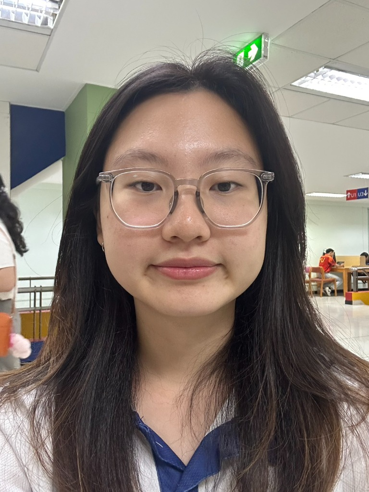

Theerisara Anusuriya
Aspiring Business Analyst with interests in Finance, Data, Technology, and Entrepreneurship
A business student with a strong interest in data analysis and finance, experienced in using analytical thinking to interpret data and translate it into actionable business insights. Passionate about supporting decision-making through structured and data-driven approaches.

Education
Thammasat University
Integrated Bachelor's and Master's Degree Program in Business and Accounting
Bachelor of Business Administration in Integrative Business Management
Professional Experience
- Project Execution: Supported the execution of business development and sales projects in a fast-paced environment, contributing to operational agility and cross-functional coordination.
- Cross-Cultural Collaboration: Collaborated with international stakeholders and team members to facilitate smooth project communication, improving professional English delivery and team alignment.
- End-to-End Project Management: Managed assigned business tasks from initiation to completion, acquiring a comprehensive understanding of sales operations and enterprise workflows.
- Structured Problem Solving: Demonstrated high adaptability by analyzing bottlenecks and developing tactical solutions to address unexpected operational challenges.
- Facilitation & Coaching: Facilitated interactive learning sessions for the financial literacy board game "Net Worth", translating core financial concepts into engaging and understandable formats for participants.
- Financial Literacy Delivery: Explained essential personal finance concepts—including budgeting, debt structure, and investment strategies—to foster practical financial awareness and decision-making skills.
- Engagement & Communication: Designed a highly collaborative environment that encouraged open dialogue among participants, strengthening public speaking, facilitation, and active listening capabilities.
- Customized Curriculum Design: Delivered personalized 1:1 mathematics tutoring, designing structured, student-centric learning plans tailored to individual learning styles and quantitative skill levels.
- Problem-Solving Development: Instructed students in analytical thinking and systematic problem-solving methods, translating complex algebraic and quantitative concepts into intuitive steps.
- Academic Transition Support: Facilitated the academic transition for elementary students (Prathom 6) transitioning to middle school (Matthayom 1) level mathematics, building core quantitative confidence and improving academic performance.
- Operations Optimization: Served as a student business consultant to analyze, restructure, and optimize business processes for a local community enterprise, establishing a foundation for sustainable operational growth.
- Capacity Building & Workshops: Designed and facilitated interactive workshops for community members, transferring essential knowledge in digital marketing and structured financial tracking.
- Strategic Marketing: Developed target market analysis and growth strategies to enhance brand visibility and expand customer acquisition channels.
- Product Positioning: Evaluated product portfolios and refined market positioning to align offerings with consumer demand and strengthen the enterprise's unique value proposition.
- Financial Infrastructure: Structured basic accounting and cash flow tracking models, empowering community management with data-driven budgeting and cost-control capabilities.
Featured Projects
KhaiKlong Project (Financial Planning Application)
Jan 2026 – Apr 2026Structured University Project: Designed a mobile-responsive conceptual application to resolve the daily financial management and inventory tracking challenges faced by local micro-vendors. Developed cost calculation models, gross margin tracking, and break-even analysis tools to empower vendor communities.
- Problem Solving: Developed cost structure and break-even analysis tools for merchants with limited business training.
- User-Focused Prototyping: Built a functional interactive interface prototype using no-code development tools (Lovable) to translate user workflows into clean UI screens.
- Community Value: Aligned application design with practical financial literacy goals to enable structured budgeting and cash flow tracking.
guest147258
Co-Curricular Activities
Welfare Staff | CU-TPC League
Thammasat & Chulalongkorn University
Oct 2025 – Nov 2025- Managed welfare operations and resource distribution for large-scale event execution.
- Designed efficient apparel packing and distribution workflow for merchandise operations.
- Provided basic first aid support during event activities.
- Managed inventory, food, and essential supplies under tight schedules.
- Developed resilience, teamwork, and fast decision-making skills in high-pressure environments.
TBS Job Fair & TBS First Meet | AZZA
Thammasat University Events
Aug 2025 & Sep 2023- Performed as a keyboardist to support stage activities during university events.
- Collaborated with event team members, strengthening teamwork, adaptability, and communication skills.
Prep for Investment Analyst | KH Academy
Finance Training & Case Study
Jan – Mar 2025- Collaborated with a team of five to evaluate the stock value of G-Able Company and presented an investment analysis plan.
- Learned financial statement analysis and company valuation fundamentals.
Rural Development Camp Volunteer
Ban Tha Wa, Phrae, Thailand
Dec 21, 2024 – Jan 3, 2025- Participated in a cross-functional rural development program.
- Welfare & Logistics: Managed daily resources and meals.
- Education: Delivered learning sessions for local children.
- Community Relations: Engaged with villagers to understand community needs.
- Construction: Contributed to infrastructure improvements (bus stop, sinks, painting).
- Strengthened adaptability, teamwork, and communication skills.
Skills Profile
Business & Finance
Data & Technical Skills
AI Tools
Professional Skills
Soft Skills
Languages
Get In Touch
If you are interested in discussing internships, analyst roles, or collaborative projects, please reach out via any of the channels below.